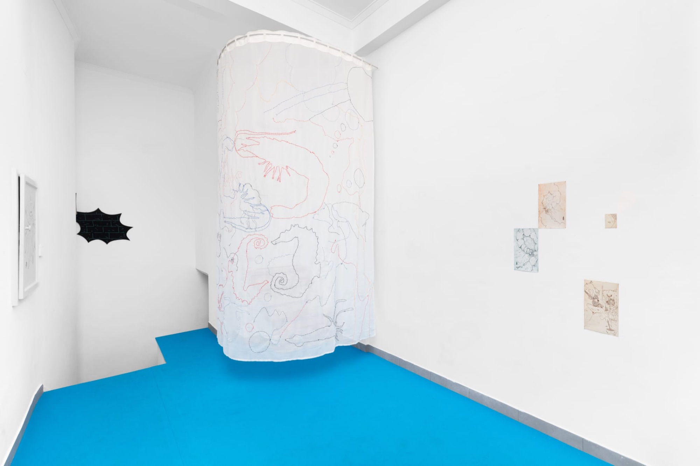

Group exhibition · with Hugo Bernardo, Simão Mota Carneiro
Canto da Teia

Works
- S/ Título (Canto de Baixo), 2025 · Hugo Bernardo, Roger Paulino and Simão Mota Carneiro Graphite on wooden door (electrical panel), carpet and audio recording; 83 x 59 x 4 cm
- Whistle Blower, 2025 · Roger Paulino Cut MDF board with painted linoleum; 10 x 60 cm
- S/ Título (Canto da Teia), 2025 · Hugo Bernardo Embroidery with wool thread on fabric (curtain) and aluminium rod; 300 x 300 cm
- Thermal Echo, 2025 · Simão Mota Carneiro Etching on paper; 24.5 x 19.5 cm
- Cosmic slop, 2025 · Simão Mota Carneiro Etching on paper; 24.5 x 19.5 cm
- Peep this, 2025 · Simão Mota Carneiro Etching on paper; 6 x 6 cm
Text by Federica Elena, curator
Whoever enters the space of Canto da Teia does not observe: they are captured. The threshold is not merely physical, it is sensorial, a silent passage that opens on the subtle border between drawing as trace and drawing as destiny. It is a line that does not represent but suggests; that does not describe but invokes. Like a sentence without punctuation, that keeps unfolding beyond the page.
As Clarice Lispector wrote, 'one cannot speak of what one feels, one speaks of the margins of what one feels', and it is precisely from those margins that this space speaks, inhabited by transparencies and light shadows. Each gesture is a provisional harbour, each form an unstable passage. Nothing is decoration, nothing is ornament: each element seems to float in a state of altered gravity, like a blind choreography, absolutely necessary. The materials, fragile, ductile, porous, carry the memory of touch, of time, of waiting. It is not about building, but about keeping: traces, breaths, invisible intentions. A minimal tension, like that of a spider's web under oblique light.
And, at heart, everything rests on this paradox: a web that imprisons and at the same time frees. That envelops but does not restrict. That produces not images but experiences of proximity and distance. It is a corner, yes, but mute, voiceless, like the one heard in the inner chambers of the body itself. A whispered chorus that commands respect even without addressing a word.
In this sense, Canto da Teia is a poetic act drawn by several hands, where drawing ceases to be an instrument and becomes a condition. A necessity that precedes form, and that perhaps, as Henri Michaux said, 'does not seek to say, but to be'. The space of andar de baixo is no longer a container but a diaphragm: a place of passage between what is seen and what is done. There, where the line becomes body and the body becomes waiting. And it is in that moment that the work happens.
Hugo Bernardo, Roger Paulino and Simão Mota Carneiro present a body of work as expanded drawing that has lost its centre to become system, organism, resonance. None of the three imposes or withdraws: it derives from a balance held in tension, like a score performed by six hands in a single breath. Here matter is not given, it is sought; the trace is not imposed, it is listened to. The line is beginning and abyss. It enters into dichotomy, it is Ariadne's thread, but also labyrinth: guide and loss.
Roger Paulino works the matrix as a territory of friction. The linoleum becomes a surface of resistance and revelation: the cut is wound and path. The print does not repeat itself, it transforms. There is something archaeological in his gesture, like someone searching for the form hidden beneath the skin of the matter. His matrices are bodies at rest, but charged with latent energy, ready to reverberate at the touch of the ink. Each print is a vibration that echoes, discreet, in the shared space of the web.